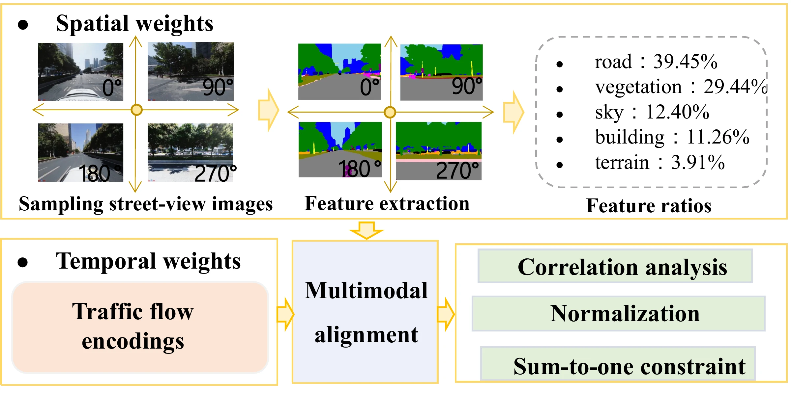
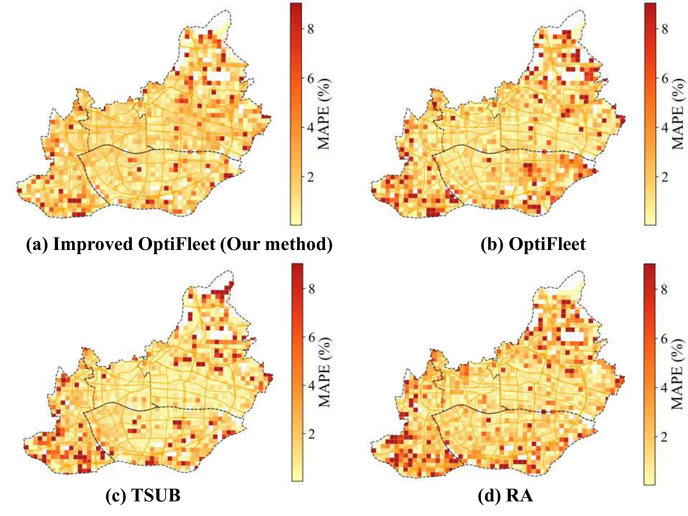

URBAN SENSING · ITSC 2025
Vehicle-Based Urban Sensing
Enhancing Urban Sensing Utility with Sensor-enabled Vehicles and Easily Accessible Data
- 1INTR Thrust, System Hub, The Hong Kong University of Science and Technology (Guangzhou)
- 2Guangdong Provincial Key Lab of Integrated Communication, Sensing and Computation for Ubiquitous Internet of Things
- 3Department of Civil and Environmental Engineering, National University of Singapore
- Corresponding author: Xinhu Zheng

OVERVIEW
Which vehicles should a city use as its sensors?
Vehicles that carry sensors can monitor a city at street level, with low deployment cost and broad coverage in space and time. The open question is which vehicles to equip or use when the budget is limited: the selection has to balance spatial and temporal coverage and avoid redundant measurements. This study proposes an adaptive framework that weights each place and time by its relevance to the sensing task, using openly accessible urban data, and an entropy-based vehicle selection strategy, Improved OptiFleet. It is validated on two months of air quality data from 320 sensor-equipped vehicles in Guangzhou, China.
-
01
Utility as weighted coverage
Sensing utility is the expected coverage of a grid of places and times: for each cell and time interval, the probability that at least one selected vehicle visits it, multiplied by a weight for how much that point matters.
-
02
Weights from easily accessible data
Static street-view imagery and dynamic traffic congestion indices describe the urban context. The weights built from them let the same framework adapt to different sensing scenarios and tasks.
-
03
Diversity over frequency
Improved OptiFleet ranks candidate vehicles by the entropy of their coverage after discounting what the selected fleet already covers, so vehicles that reach new places and times are preferred to those that revisit well-covered ones.
METHOD
Quantify sensing utility, estimate the weights, select the fleet
The study area is divided into spatial grid cells and the day into time intervals. For every candidate vehicle the method takes the normalized frequency with which it visits each cell in each interval. Fleet selection is then a budgeted maximization: choose the subset of vehicles with the highest sensing utility whose total deployment cost stays within the budget.
-
Sensing utility
For a fleet S, the probability that cell g is covered in interval t is Pg,t(S) = 1 − ∏v∈S (1 − pg,t(v)). Utility f(S) is the sum of wg,t Pg,t(S) over all cells and intervals, where wg,t is the importance of that point.
-
Spatiotemporal weights
Street-view imagery and traffic congestion indices are retrieved via the Baidu Map API. Low-quality images are filtered out with OpenCV-based checks, Mask2Former extracts street-scene features from the rest, and the correlations between those features and pollutant concentrations are normalized into spatial weighting factors.
-
OptiFleet
Assuming independent vehicle visits, the utility is monotone and submodular, so a greedy algorithm has a (1 − 1/e) approximation guarantee. OptiFleet repeatedly adds the vehicle with the largest marginal utility gain per unit cost until the budget is exhausted.
-
Improved OptiFleet
OptiFleet tends to favor vehicles that revisit already well-covered areas, especially dense urban centers. Improved OptiFleet scores each candidate by a Shannon entropy computed on its visit probabilities after they are scaled by the weights and down-weighted where the fleet already covers, and adds the vehicle with the highest effective entropy per unit cost.
RESULTS
Two months of air quality data from 320 taxis in Guangzhou
The study area is the core of Guangzhou, approximately 279.63 km², divided into 3,811 grid cells of 500 m × 500 m. From 1 March to 30 April 2023, sensor-equipped taxis recorded GPS positions at approximately 15-second intervals together with four pollutants: NO, NO2, PM2.5 and PM10. Trajectories were map-matched to the OpenStreetMap road network with a hidden Markov model. Improved OptiFleet is compared with OptiFleet, a utility baseline that counts distinct taxis (TSUB) and random assignment (RA).
- Sensing utility · 200 vehicles
- 60.91
- Improved OptiFleet, against 59.14 for OptiFleet, 58.47 for TSUB and 57.54 for random assignment. Table I.
- Highest utility
- 6 of 7
- Fleet sizes at which Improved OptiFleet scores highest: 50 to 300 vehicles. OptiFleet is highest at 10. Table I.
- MAPE below 5%
- ≈ 200
- Vehicles, out of 320, at which the average MAPE across space and time against the full fleet drops below 5%. Section IV-B.
- Data
- 320
- Sensor-equipped vehicles in Guangzhou, 1 March to 30 April 2023, measuring four pollutants.
Sensing utility by fleet size
Each strategy first selects its fleet; the utilities of all fleets are then calculated with the same coverage function proposed in the paper. Improved OptiFleet has the highest utility at every fleet size from 50 to 300 vehicles, and at 10 vehicles OptiFleet is highest. The paper puts the improvement at approximately 5% over random assignment at the same fleet size, and notes that the advantage diminishes as the fleet becomes larger.
Table I of the paper: sensing utility of the fleets selected by each strategy, by size of the vehicle fleet (number of vehicles). Bold: best in each column.
| Algorithm | 10 | 50 | 100 | 150 | 200 | 250 | 300 |
|---|---|---|---|---|---|---|---|
| TSUB | 4.23 | 18.17 | 33.26 | 46.93 | 58.47 | 68.69 | 78.13 |
| RA | 3.88 | 17.56 | 31.92 | 45.44 | 57.54 | 68.35 | 77.94 |
| OptiFleet | 4.41 | 18.97 | 34.03 | 47.41 | 59.14 | 68.90 | 78.46 |
| Improved OptiFleet | 4.17 | 19.00 | 35.15 | 48.94 | 60.91 | 70.93 | 79.26 |
TSUB: Taxi-based Sensing Utility Baseline, which defines utility from the number of distinct taxis that pass a grid cell in a time period. RA: random assignment. OptiFleet: the marginal-gain selection without the entropy criterion.
Estimation error against the full fleet
The measurements of the full fleet are taken as ground truth, and RMSE and MAPE measure how far the estimates from a smaller selected fleet are from them. Accuracy improves with fleet size at a diminishing rate, because each added vehicle overlaps more with what is already covered. The average MAPE across space and time drops below 5% at approximately 200 vehicles, and RMSE falls below 5 at 250. For PM2.5 with 200 vehicles, the paper ranks the strategies Improved OptiFleet, OptiFleet, TSUB, RA, from lowest to highest estimation error.
![Two line charts against the number of vehicles in the fleet, from 0 to 320, each with one line for NO, NO2, PM2.5 and PM10 and a dashed reference line at 5. Left, RMSE: the lines start between about 35 and 60, fall steeply for the first few dozen vehicles and then steadily, and cross the reference line between about 250 and 280 vehicles. Right, MAPE in percent: the lines start above 80 and fall the same way, with NO the highest throughout, crossing the reference line at about 200 vehicles for three pollutants and about 250 for NO.](assets/media/estimation-errors.webp)

What the weights contribute
An ablation compares variants with temporal weights, with spatial weights, and without spatiotemporal weights on the same sensing task. Temporal weighting, which captures traffic dynamics, is the component that matters for estimation accuracy; spatial weighting from static street-view features gives only marginal improvements. The paper concludes that dynamic urban signals should guide the selection in mobile air quality monitoring.

Scope
The paper states its limit: the validation was conducted only in Guangzhou, because of data availability, and how the framework generalizes to cities with different traffic patterns, fleet structures and urban morphologies remains to be explored. Estimation errors are measured against the full 320-vehicle fleet rather than an independent reference, and the approximation guarantee for greedy selection rests on the assumption that vehicle visits are independent.
CITATION
@inproceedings{zhong2025enhancing,
title={Enhancing Urban Sensing Utility with Sensor-enabled Vehicles
and Easily Accessible Data},
author={Hui Zhong and Qing-Long Lu and Qiming Zhang and Hongliang Lu and
Xinhu Zheng},
booktitle={2025 IEEE 28th International Conference on Intelligent
Transportation Systems (ITSC)},
pages={3218--3223},
year={2025},
doi={10.1109/ITSC60802.2025.11423491},
eprint={2512.07124},
archivePrefix={arXiv},
primaryClass={cs.ET},
}